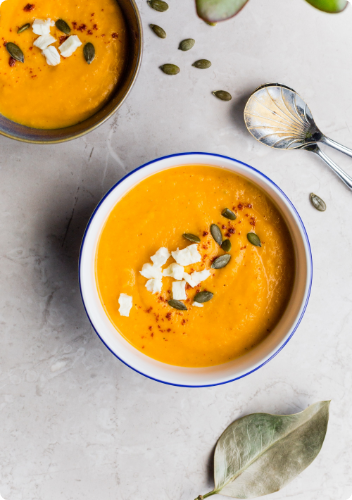
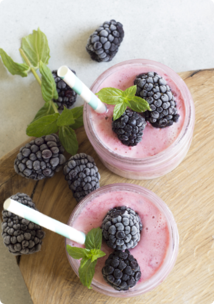
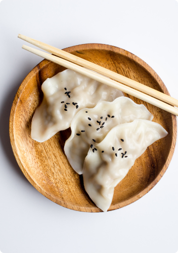
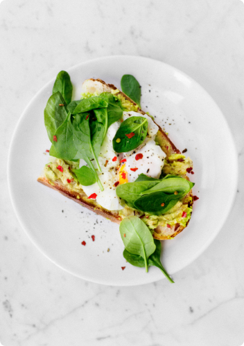

Popular recipes

Recipes — SoUP
Butternut Squash Soup
45 min — 6 - 8 portions

Recipes — DRINKS — Breakfast
Butternut Squash Soup
15 min — 2 - 4 portions

Recipes — ASIAN
Vegetarian Dumplings
40 min — 4 - 6 portions

Recipes — Breakfast
Tropical Smoothie Bowl
25 min — 1 - 2 portions
Recipes — Asian
Spicy Noodles
30 min — 2 - 4 portions

Recipes — Breakfast — snack
Avocado Toast
10 min — 1 - 2 portions